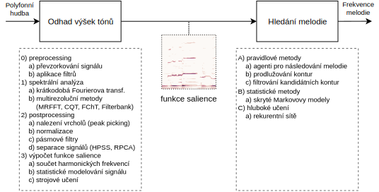

Extrakce melodie pomocí hlubokého učení
autor práce: Jiří Balhar vedoucí práce: Mgr. Jan Hajič, Ph.D.


Extrakce melodie
Extrakce melodie patří mezi nejdůležitější a nejtěžší úlohy oboru Music Information Retrieval, právě melodie je totiž tím hlavním, co si člověk po poslechu skladby odnáší a z podstaty se tedy často jedná o její nejvýraznější rys. Přítomnost hudebního doprovodu, který melodii podbarvuje, však pro algoritmické metody znemožňuje její průběh spolehlivě zachytit. V posledních letech se proto obor posouvá směrem k využívání metod hlubokého učení, které jsou schopny dřívější pravidlové systémy překonat. Na tyto práce navazujeme, představujeme tři nové metody a experimentálně ověřujeme volby, které jsme při jejich návrhu učinili. Ukazujeme, že nová architektura Harmonic Convolutional Neural Network, založená na úpravě vnitřního uspořádání obvyklé konvoluční sítě, díky které je schopna lépe zachytit harmonickou povahu jednotlivých tónů ze vstupních spektrogramů s logaritmickou osou frekvence, překonává state-of-the-art metody pro extrakci melodie na většině veřejně dostupných datasetech.
Současné přístupy
Metody pro extrakci melodie se obvykle sestávají ze dvou kroků:
- Výpočet funkce salience, která v každém časovém okamžiku vstupní skladby udává pravděpodobnosti (a nebo obecná skóre) pro každé frekvenční pásmo, zda se melodie nachází právě na dotyčné frekvenci.
- Výběr melodie včetně označování úseků bez melodie na základě výsledků funkce salience.
Práce se zaměřuje hledání nových způsobů výpočtu funkce salience s použitím postupů hlubokého učení.
Výběr baseline metod
Pro srovnání navrhovaných architektur v této práci jsme vybrali tři existující metody, které se řadí mezi nejlepší v oboru.
- Salamon (2012) [1]: Metoda založená na výpočtu funkce salience pomocí sčítání harmonických frekvencí, extrakci kandidátních melodických kontur a jejich výběru pomocí pravidel.
- Bittner (2017) [2]: První práce využívající hlubokých konvolučních sítí (CNN) pro výpočet funkce salience.
- Basaran (2018) [3]: Zlepšení výsledků [2] pomocí přidání rekurentních vrstev do hlubokého modelu (RNN) a využití alternativní frekvenčně-časové reprezentace vstupního signálu
Používané datasety
| MedleyDB | Orchset | ADC04 | MIREX05 train. | MDB-synth | WJazzD | |
|---|---|---|---|---|---|---|
| Celková délka | 5.59 h | 23.4 m | 6.1 m | 6.5 m | 3.19 h | 8.85 h |
| Počet nahrávek | 108 | 64 | 20 | 13 | 65 | 299 |
| Žánr | mnoho-žánrový | klasika | pop, jazz, opera, midi | pop, midi | mnoho-žánrový | jazz |
| Účel v práci | Trénování, Validace, Testování | Testování | Testování | Testování | Testování | Testování |
Architektura HCNN
Architektura HCNN je založena na speciálně upravené hluboké konvoluční síti. Cílem sítě je transformovat vstupní spektrogram hudby na výstupní pravděpodobností rozložení přítomnosti melodie dané frekvence v daném okamžiku (funkce salience). Obvyklé konvoluční filtry mají pouze omezené zorné pole (ve strojovém vidění například 3x3 pixely), přitom související informace na spektrogramu (časově-frekveční reprezentaci vstupního hudebního signálu) jsou rozmístěny po celé výšce vstupního obrázku. Proto se vyplatí vstup každé konvoluční vrstvy transformovat tak, aby vrstva měla související informace při výpočtu dané hodnoty k dispozici.
Protože harmonické složky znějících tónů melodie jsou na spektrogramu s logaritmickou osou frekvence rozmístěny v konstantních vzdálenostech od základní frekvence tónu, pokud vstup konvoluční vrstvy duplikujeme a vzájemně tyto kopie posuneme v rámci frekvenční osy o tyto vzdálenosti, následná konvoluční vrstva bude mít díky této harmonické úpravě při výpočtu přístup i k harmonickým složkám dané frekvence.
Pro testování vybíráme dvě varianty této architektury. Varianta HCNN noctx pro výpočet funkce salience využívá pouze ~ 5.8 ms vstupního audio signálu. Varianta HCNN pak zahrnuje i informaci o zvukovém okolí délky ~ 162 ms daného časového okamžiku skladby.
Architektura CREPE
Při návrhu této architektury jsme vycházeli z existující metody CREPE [4] určené pro odhad frekvence v jednohlasé nahrávce. Metoda pracuje s nezpracovaným signálem a pomocí šesti konvolučních vrstev tento vstup transformuje do výsledného vektoru pravděpodobností přítomnosti melodie na dané frekvenci v daném časovém okamžiku (funkce salience).
Architektura WaveNet
Generativní model WaveNet popsaný v práci [5] je architektura navržená pro generování zvukového signálu, v této práci ji upravujeme pro účel extrakce melodie. Architektura spočívá ve vrstvení dilatovaných konvolucí („konvoluce s dírami“) s rozšiřujícím se rozsahem. Díky exponenciálně rostoucím dilatacím se také exponenciálně zvětšuje receptivní pole jednotlivých konvolučních vrstev. Síť tedy velmi snadno pokryje široký kontext, což je vlastnost, která je pro zpracování zvukového signálu užitečná.
Výsledky
Metoda HCNN dosahuje na 4 z 6 uvažovaných datasetech state-of-the-art výsledků. Zajímavé jsou také výsledky sítě HCNN-noctx, která dosahuje podobných výsledků navzdory odhadu frekvence melodie na základě velmi krátkého vstupního okna (~ 5.8 ms)
| MedleyDB | Orchset | ADC04 | MIREX05 train. | MDB-synth | WJazzD | |
|---|---|---|---|---|---|---|
| Salamon | 0.518983 | 0.23484 | 0.713797 | 0.71452 | 0.526605 | 0.66701 |
| Bittner | 0.610536 | 0.407476 | 0.715937 | 0.701514 | 0.632738 | 0.691608 |
| Basaran | 0.640077 | 0.482725 | 0.668765 | 0.734208 | 0.689269 | 0.700011 |
| CREPE | 0.590358 | 0.56177 | 0.651833 | 0.502414 | 0.248407 | 0.671294 |
| WaveNet | 0.503019 | 0.256312 | 0.681222 | 0.648555 | 0.527904 | 0.648373 |
| HCNN noctx | 0.634686 | 0.439265 | 0.736834 | 0.723013 | 0.625988 | 0.715354 |
| HCNN | 0.651832 | 0.458948 | 0.726164 | 0.755328 | 0.660897 | 0.724758 |
Metrika Overall Accuracy je vypočítána jako poměr správných predikcí výšky melodie nebo správného určení její nepřítomnosti ku celkovému počtu anotačních bodů.
| MedleyDB | ORCHSET | ADC04 | MIREX05 train. | MDB-synth | WJazzD | |
|---|---|---|---|---|---|---|
| Salamon | 0.525844 | 0.280616 | 0.767063 | 0.760712 | 0.513802 | 0.693208 |
| Bittner | 0.670104 | 0.518621 | 0.814213 | 0.806656 | 0.605959 | 0.773577 |
| Basaran | 0.706123 | 0.634579 | 0.79281 | 0.797663 | 0.733417 | 0.767087 |
| CREPE | 0.615894 | 0.407638 | 0.794163 | 0.778658 | 0.549987 | 0.782237 |
| WaveNet | 0.594588 | 0.345431 | 0.796026 | 0.791643 | 0.52825 | 0.758669 |
| HCNN noctx | 0.701167 | 0.510867 | 0.827419 | 0.833242 | 0.646518 | 0.805312 |
| HCNN | 0.715023 | 0.535162 | 0.840672 | 0.851405 | 0.65383 | 0.805913 |
Metrika Raw Pitch Accuracy je vypočítána jako poměr správných predikcí výšky melodie ku celkovému počtu anotačních bodů. Metrika tedy nezahrnuje přesnost detekce melodie, pouze přesnost určení výšky, na kterou se práce zaměřovala.
Závěr
V práci jsme nastínili principy dosavadních přístupů k extrakci melodie, uvedli výčet veřejně dostupných dat a vysvětlili způsoby evaluace. Na těchto základech jsme pak prezentovali experimentální výsledky nových architektur určených pro výpočet funkce salience s důrazem na odhad výšky tónů v nahrávkách, jejichž návrhy čerpají z příbuzných oborů a úloh. Následně jsme tyto architektury porovnali s vybranými state-of-the-art metodami pro výpočet salienčních funkcí. Ze tří navrhovaných dosáhla architektura HCNN na většině veřejně dostupných datasetech nejlepších výsledků.
Citované práce
- [1] Salamon, J., & Gomez, E. (2012). Melody extraction from polyphonic music signals using pitch contour characteristics. IEEE Transactions on Audio, Speech and Language Processing, 20(6), 1759–1770.
- [2] Bittner, R. M., Mcfee, B., Salamon, J., Li, P., & Bello, J. P. (2017). Deep Salience Representations for F0 Estimation in Polyphonic Music. Ismir, 23–27.
- [3] Basaran, D., Essid, S., & Peeters, G. (2018). Main melody extraction with source-filter NMF and CRNN. Ismir, 82–89.
- [4] Kim, J. W., Salamon, J., Li, P., & Bello, J. P. (2018). Crepe: A Convolutional Representation for Pitch Estimation. ICASSP, IEEE International Conference on Acoustics, Speech and Signal Processing - Proceedings, 2018-April, 161–165.
- [5] Oord, A. van den, Dieleman, S., Zen, H., Simonyan, K., Vinyals, O., Graves, A., … Kavukcuoglu, K. (2016). WaveNet: A Generative Model for Raw Audio, 1–15.
Ústav formální a aplikované lingvistiky - MFF UK - Univerzita Karlova